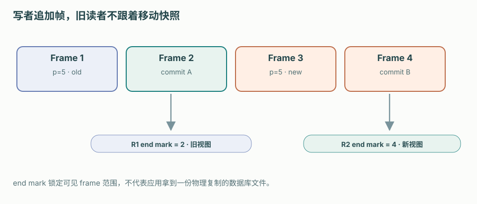
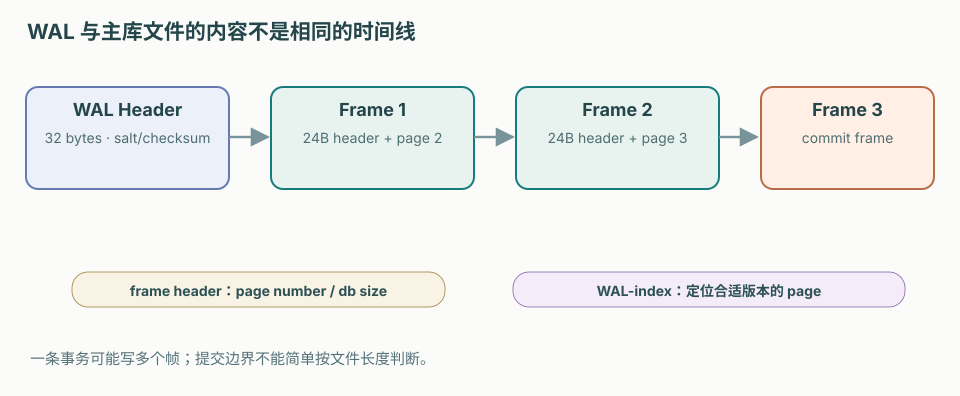
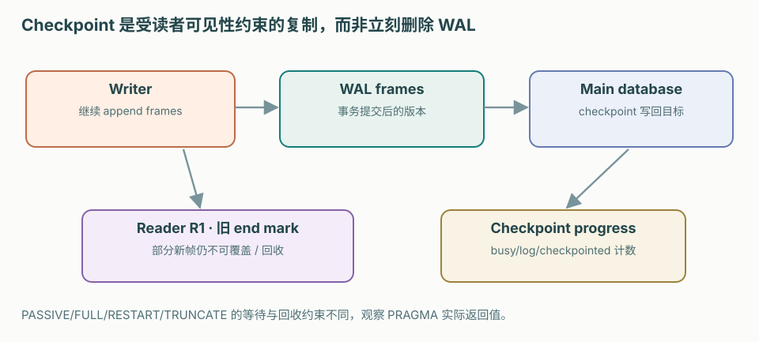

WAL 深入：帧、读者快照与 Checkpoint
写者不断追加 WAL，旧读者为何仍看到旧数据？从 frame 格式、end mark 与 checkpoint 条件开始，把并发能力与不能消除的锁冲突分开解释。
阅读提示：可轻点图解打开独立矢量原图；窄屏图解支持横向查看细节。
1. 为什么写事务提交后，正在读的连接仍看到旧值？
对文件数据库启用 PRAGMA journal_mode=WAL 后，修改过的数据库页一般作为新版本追加到 WAL，而不是在每次事务提交时就覆盖主数据库文件。读事务开始时会固定一个end mark，它只读取这条边界之前有效且已提交的页版本。这意味着另一个连接继续提交时，旧读者仍持有自己的快照。

这种行为称为快照隔离，SQLite 官方 Isolation 文档有专门说明。但不能写成“WAL 完全消除了所有锁”：同一数据库同一时刻仍只有一个 writer；checkpoint、读者/写者启动以及某些恢复情况仍可能遭遇 SQLITE_BUSY。WAL 官方文档明确保留了这些例外。
2. WAL 文件里究竟写了什么？
WAL 文件开头有32 字节 WAL header，随后是一系列 frame；一个 frame 包含24 字节 frame header 与一页完整的 page data。frame header 包含目标页编号、与事务提交有关的数据库大小字段、salt 与 checksum。WAL 文件和 WAL-index 是不同对象：WAL-index 用来加快按页号寻找可见版本。

所谓“提交帧”并不依靠单独的 SQL COMMIT 字符串，而是文件格式定义的 frame header 信息。WAL 不意味着每个 frame 都对应独立事务，也不意味着文件越长数据越新——重启复用、checkpoint 和 salt 都可能影响文件的解释。参考 官方文件格式的 WAL 部分。
最少应知道的物理结构
| 位置 | 长度 | 作用 |
|---|---|---|
| WAL header | 32 bytes | 魔数、WAL 格式、页面大小、salt、checksum |
| Frame header | 24 bytes | 页编号、可能的提交标识、salt、checksum |
| Page image | database page size | 某个数据库页的新版本 |
手工读取 WAL 时必须让连接处于有活动 WAL 的受控状态。最后一个连接关闭时可能 checkpoint 并移除 -wal/-shm 文件，所以“没看到 WAL 文件”不等于“journal_mode 不是 WAL”。
3. 查询同一页：WAL-index 和 end mark 如何配合
读者需要某个数据库页 N 时，先确定本次快照边界，然后可利用 WAL-index 查找 end mark 之前该页的最后可见版本；如果 WAL 中没有有效覆盖，就从主数据库文件获取。读者不需要把 WAL 全部按 SQL 重新执行一遍，也不需要对每个 SELECT 复制数据库文件。
源码可以依次追踪 wal.c 中的 read-transaction 和 frame lookup 相关函数，接着观察 pager.c 如何协调 B-Tree 的页面访问。实际源码中的函数名、共享内存布局和索引哈希算法是内部细节，应该和正在使用的 SQLite 源码版本同时记录。
4. Checkpoint 不是“定时把所有 WAL 帧复制走”
Checkpoint 在满足安全条件时把 WAL 内的有效页面版本写回主数据库。读者仍持有较早 end mark 时，新帧未必能够全部 checkpoint；因此一个长时间不结束的读事务可能导致 WAL 持续增长或不能及时 reset/truncate。

PRAGMA wal_checkpoint(PASSIVE) 返回三个数值，表示 busy 状态及 log / checkpointed 帧数；不要写成调用返回 SQLITE_OK 就证明已经 truncate WAL。默认自动 checkpoint 阈值通常以 1000 page/frame 为基准，但配置、API 与 SQLite build 会改变实际行为。WAL Checkpointing 文档
-- 必须在真实文件型数据库中运行
PRAGMA journal_mode=WAL;
PRAGMA wal_autocheckpoint=0; -- 仅为实验，避免自动 checkpoint
PRAGMA wal_checkpoint(PASSIVE); -- 三列结果需按当前活动读者解释
-- 恢复默认/合适的自动 checkpoint 策略，不要照搬到生产配置性能测量还需要区分 WAL 文件被写、数据被 checkpoint、文件被截断及 OS page cache 的独立代价；单凭 WAL 文件大小不可能精确还原事务数。
5. 用两条连接与 WAL 头读取验证快照
本章提供 examples/16_wal_snapshot.py 和 examples/16_wal_inspect.py。前者让读者 A 显式 BEGIN 并读取初始值；写者 B 在另一连接提交新值；A 在旧事务内仍读旧值，ROLLBACK 后新事务看到新值。后者在连接保持打开时读取 WAL magic 和 32/24 字节头，验证文件布局。
python3 examples/16_wal_snapshot.py
python3 examples/16_wal_inspect.py
# 正常完成：snapshot old/new semantics verified
# 正常完成：WAL magic/page_size/frame layout checked
# 具体 WAL 帧数依版本和页面修改范围而异，不写固定值断言。这两个实验都使用 Python 标准库 sqlite3。它们只验证读者语义与受控的文件结构，不能证明设备掉电持久性，也不能从无 WAL 文件推断事务没有提交。
6. WAL 的历史修复与调试边界
旧版章节提及 WAL-reset bug，却没有清楚区分“特定版本缺陷”和“WAL 本来如此”。SQLite 官方在 3.51.3 发布说明（2026-03-13）列出 WAL-reset 数据损坏缺陷的修复。它应作为版本化历史风险研究，而不是泛化为任意 SQLite 版本的 WAL 都容易损坏。
对 WAL 故障报告最有价值的证据是 sqlite3_libversion()、sqlite3_sourceid()、日志模式、VFS 类型、多个连接的交错顺序、checkpoint 模式和实际返回码。没有这些条件，就不能拿教学时间线直接确定某个源码 bug 的根因。
下一步可重复练习
- 保持一个读事务不结束，反复让另一写连接提交，比较
wal_checkpoint(PASSIVE)返回值； - 结束读事务后再 checkpoint，观察哪些计数或文件大小发生变化；
- 说明为什么在不同 WAL 文件生命周期下不能用文件大小推导精确 commit 数。
自测：为什么 WAL-reader 的 end mark 与主库页号不是一回事？
end mark 是读事务可见 WAL frame 的边界；页号指数据库中的逻辑页面。不同 frame 可包含相同页号的不同时刻版本，读者需选择截止于自己快照的最新有效版本。
下一章把 WAL snapshot 与 rollback 文件锁放在同一个并发案例中，对比 BUSY、LOCKED 与 BUSY_SNAPSHOT。
原始资料与版本边界
本章绘制的序列与数据样本用于解释因果，不是逐条源码 trace。特别是 WAL 文件生命周期、snapshot、journal mode 与事务执行时机都与 SQLite 版本和具体工作负载相关。
- SQLite Write-Ahead Logging · SQLite 官方
- WAL 文件格式 · SQLite 官方
- SQLite 隔离语义 · SQLite 官方
- WAL Checkpoint API · SQLite 官方
- SQLite 3.51.3 修复说明 · SQLite 官方